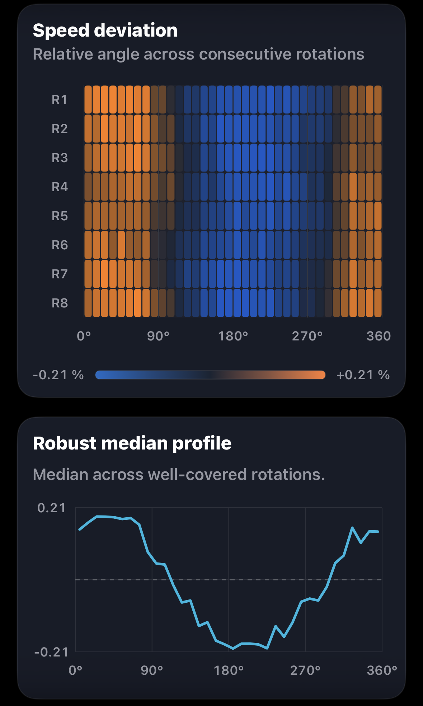
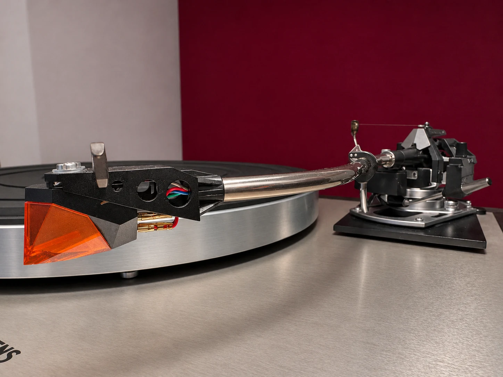
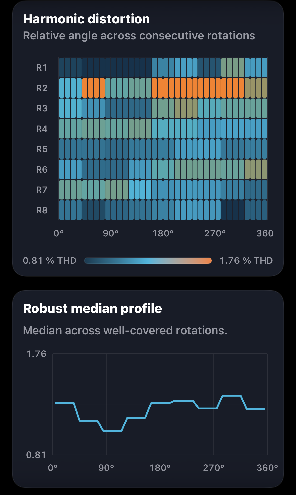
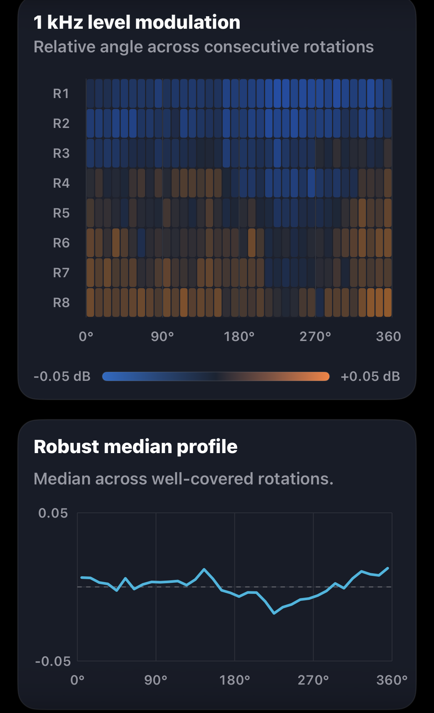

Speed deviation

Left channel selected

Groove Scope measurement · GS-2026-0017
A 1 kHz reference check of the Ortofon on a vintage Thorens after azimuth and anti-skate adjustment.
Measurement at a glance
Michelangelo Canonico measured this system for Direct Sound Records. These figures come from the final 1 kHz capture.
Rotation fingerprints
Each view pairs Groove Scope’s angular heatmap with its robust median profile. Choose L or R on each card. Channel assignments follow the supplied filenames.

Left channel selected

Left channel selected

Left channel selected

Left channel selected
Each plot shows eight revolutions on its own relative angular reference. On smaller screens, swipe to browse all four plots.
Azimuth and anti-skate
The measurer noted an initial 5.86 dB imbalance when setting azimuth and reported a marked qualitative improvement after adjusting anti-skate. The table records the final 1 kHz capture.
Rotational behaviour
Over eight revolutions, both speed fingerprints show a faster region near the beginning and end of each plotted turn and a slower region in the middle. The recurrence shows where the speed varied within the rotation.
Measurement chain
Open technical record
The technical record includes the original report, structured results, file checksums and the measurement method.
Measurement results
The table preserves the report’s figures for playback speed, weighted and unweighted stability, channel behaviour and harmonic distortion.
| Metric | Measured result |
|---|---|
| Playback speed under stylus load | 33.30 RPM |
| Playback speed error | −0.11% vs 33⅓ RPM |
| Settled speed range | 33.22–33.37 RPM |
| Settled speed span | 0.15 RPM |
| DIN-shaped wow & flutter RMS | 0.028% |
| Raw speed variation, unweighted RMS | ±0.138% |
| Raw speed variation, unweighted 2-sigma | ±0.276% |
| Raw wow, unweighted RMS | 0.134% |
| Raw flutter, unweighted RMS | 0.032% |
| Channel balance, L−R | +0.44 dB |
| Average channel separation at 1 kHz | 32.2 dB |
| Electrical crosstalk, L→R | −33.0 dB |
| Electrical crosstalk, R→L | −31.3 dB |
| Directional crosstalk difference | 1.72 dB |
| Total harmonic distortion | Left 1.23%, right 1.26% |
| THD difference, L−R | −0.03 percentage points |
| Second harmonic (H2) | Left −38.6 dB, right −38.5 dB |
| Third harmonic (H3) | Left −49.7 dB, right −50.1 dB |
| Fourth harmonic (H4) | Left −57.4 dB, right −58.8 dB |
| Fifth harmonic (H5) | Left −68.3 dB, right −66.4 dB |
| H2 difference summary | Right 0.1 dB higher |
| H3 difference summary | Left 0.5 dB higher |
Report note. Total harmonic distortion in the left channel changed most during the capture. The report calls for repeating the measurement before making further cartridge setup changes.
The table preserves the precision of the reported channel readings and their differences.